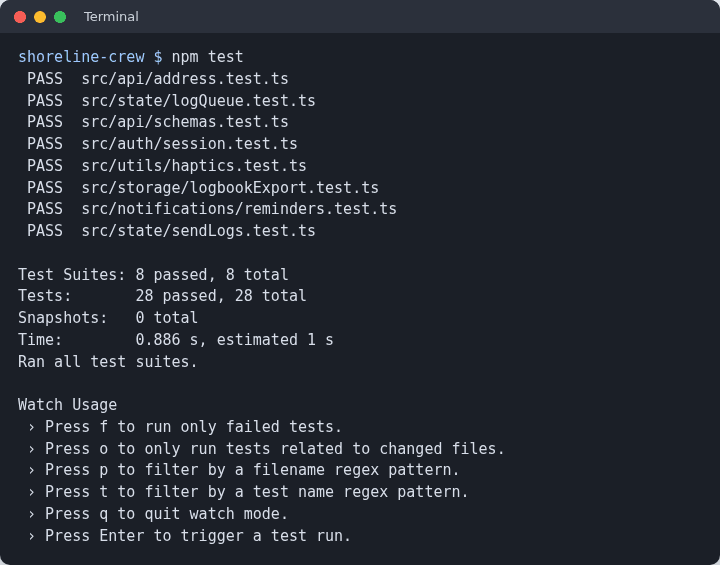

React Native & Expo · Part 3 · Session 20 of 26 · 3 hours
Session 20
Testing the App's Logic
A safety net for the parts of the app nobody watches.
Today
Three hours, one lesson
| 0:00 | Warm-up: three questions from Session 19 |
| 0:10 | 8.2 Frame: a dry run on the dock |
| 0:20 | Demo: the setup and the first tests |
| 0:40 | Lab: Tasks 1 and 2 |
| 1:05 | Break (10 min) |
| 1:15 | Demo: break the setup on purpose |
| 1:35 | Lab: Task 3 |
| 1:55 | Project: Steps 1 to 3 |
| 2:50 | Exit ticket, homework, bring list |
LABS Lab files are in
labs/module-20. Work in starter/.Warm-up · 6 minutes
Three questions from Session 19
- The Logbook tab with one log waiting: what does a screen reader say?
- What does
accessibilityRoletell a test, and a person? - Which motion setting did Lesson 7.3 add, and where is it kept?
WHY Lesson 8.3 finds elements by exactly those roles and names.
8.2
Testing the App's Logic
Tests for the parts you cannot watch.
8.2 · Why
The trip nobody watches
- A log: into the queue, through a closed app, to the server on the third try
- Five ways it can end: sent, offline, refused, no answer, signed out
- Walking every path by hand after every change stops happening
- A test suite walks them all in about two seconds
HABIT Red is information: is the app wrong, or the test setup?
8.2 · Mental model
A dry run on the dock
- jest-expo builds a dock that looks like a phone: Platform.OS is 'ios'
- Every Expo native module has a stand-in that answers
- Your tests decide what the sea does: yes, no, the signal drops
- The app's decisions are real; the world around them is pretend
LIMIT Stand-ins prove decisions, not what a real phone answers.
8.2 · From Vitest
What changes from the HQ
import ... from vitest→ nothing: globalsvi.fn() vi.mock()→jest.fn() jest.mock()- vite.config.ts → package.json "jest"
- jsdom (a browser) → a pretend phone
- Vite → Babel (Expo's preset), CommonJS
- .env files → the setup file sets
EXPO_PUBLIC_API_URL npm testwatches:-- --watchAll=false- Never a test inside
src/app/
SAME Test files next to the code, *.test.ts; helpers in src/test/ as in the HQ.
8.2 · Where calls go
A test's world
- A test file → the app's real code
- fetch: Node's → MSW → shoreline-api's own code
- Native modules → stand-ins (jest.fn) the test controls
- Nothing listens on port 4000: no request leaves Node
WHY Tests work with shoreline-api stopped, on a plane, on a build server.
8.2 · Demo · the setup
Keeping Node's fetch
shoreline-crew/jest.environment.js
// Shoreline Crew's Jest environment (new). Expo SDK 58 swaps the global fetch for Expo's own // (expo/fetch), which only works inside the app on a phone: under Jest it answers nothing. // This keeps Node's fetch under another name; jest.setup.ts puts it back for the tests. const { TestEnvironment } = require('jest-expo/src/preset/nativeEnvironment'); module.exports = class ShorelineEnvironment extends TestEnvironment { constructor(config, context) { super(config, context); this.global.__nodeFetch = this.global.fetch; } };
WHY SDK 58 swaps the global fetch for Expo's, which needs a phone.
8.2 · Demo · the setup
jest.setup.ts: putting it back
shoreline-crew/jest.setup.ts
function useNodeFetch() { const nodeFetch = (globalThis as { __nodeFetch?: typeof fetch }).__nodeFetch; Object.defineProperty(globalThis, 'fetch', { value: nodeFetch, writable: true, configurable: true }); } useNodeFetch(); beforeAll(useNodeFetch); // 2. The API address the tests use. .env.local is Metro's: Jest never reads it
WHY Twice: loading expo again (even through jest.mock) installs Expo's fetch again.
8.2 · Demo · the bridge
startMockApi(): one call per test file
shoreline-crew/src/test/server.ts
export function startMockApi(): void { beforeAll(() => server.listen({ onUnhandledFrame: 'error' })); // Every test starts from the sample data, with only the API's own handlers beforeEach(() => api.reset()); afterEach(() => { server.resetHandlers(); server.events.removeAllListeners(); }); afterAll(() => server.close());
WHY MSW 3 calls it onUnhandledFrame: an unknown request fails the test.
8.2 · Demo · the first test
Five passed
npm test -- --watchAll=false src/api/address.test.ts
PASS src/api/address.test.ts
addressProblem
✓ accepts an address written correctly
✓ explains a missing address, a missing http:// and an /api at the end
addressAdvice
✓ reads the host from an address
✓ tells a phone that localhost is the phone itself
✓ gives each device its own advice for the same address
Test Suites: 1 passed, 1 total
Tests: 5 passed, 5 total
8.2 · Demo · red on purpose
Expected, Received, the line
expect(hostOf('http://LOCALHOST:4000')).toBe('localhost2');
✕ reads the host from an address
● addressAdvice › reads the host from an address
Expected: "localhost2"
Received: "localhost"
> 17 | expect(hostOf('http://LOCALHOST:4000')).toBe('localhost2');
Tests: 1 failed, 4 passed, 5 total
8.2 · Demo · Step 5
The sender's five outcomes
npm test -- --watchAll=false src/state/sendLogs.test.ts
PASS src/state/sendLogs.test.ts ✓ sends a waiting log, saves it in the logbook, and takes it out of the queue ✓ sends nothing while the phone is offline ✓ marks a log the server refuses, with the server's words ✓ keeps the log and counts the try when the server does not answer ✓ keeps the log for the next sign-in when the sign-in has ended Test Suites: 1 passed, 1 total Tests: 5 passed, 5 total
WHY In Lesson 5.5 you tried each of these by hand, stopping and starting the API.
8.2 · Demo · Step 5
The same run, as the lesson shows it

8.2 · Guided lab · 25 minutes
Every task is a fix to a test file
labs/module-20/l8_2-testing-the-apps-logic/starter- As shipped:
Tests: 7 failed, 3 passed, 10 total - Task 1: a gear shed that leaks between tests (
-t refusespasses alone) - Task 2: a draft in the keychain, and a stand-in that answers undefined
RULE The code is right. Ask: setup or app?
Break · 10 minutes
Break
- Leave the triage board up
- After the break: we break the setup on purpose
8.2 · Demo 2
Setup or app? Five shapes
- A whole file fails before any test: an ES module, or a native module with no stand-in
- Every request 'no answer': Expo's fetch
- Fails inside code that works on the phone: what does the stand-in return?
- Green tests, red tsc: the types
- Passes alone, fails in the run: a leak
8.2 · Mistake · npx jest
Must use import to load ES Module
npx jest src/state/sendLogs.test.ts
FAIL src/state/sendLogs.test.ts
● Test suite failed to run
Must use import to load ES Module: <folder>/node_modules/msw/lib/core/index.js
FIX The flag lives in the test script: npm test, options after --.
8.2 · Mistake · Expo's fetch
Two pass, three fail, attempts: 1
npm test -- --watchAll=false src/state/sendLogs.test.ts
FAIL src/state/sendLogs.test.ts ✕ sends a waiting log, saves it in the logbook, and takes it out of the queue ✓ sends nothing while the phone is offline ✕ marks a log the server refuses, with the server's words ✓ keeps the log and counts the try when the server does not answer ✕ keeps the log for the next sign-in when the sign-in has ended Test Suites: 1 failed, 1 total Tests: 3 failed, 2 passed, 5 total
SHAPE The two that pass expected no answer. Suspect the fetch, not the app.
8.2 · Mistake · AsyncStorage
The whole file stops
npm test -- --watchAll=false src/state/logQueue.test.ts
FAIL src/state/logQueue.test.ts ● Test suite failed to run Test Suites: 1 failed, 1 total Tests: 0 total
FIX Not an Expo module: its authors' Jest mock goes in jest.setup.ts.
8.2 · Mistake · an empty mock
Cannot read properties of undefined
npm test -- --watchAll=false src/utils/haptics.test.ts
✕ buzzes "success" when something went through
✓ stays still when the volunteer turned buzzing off
● buzzes "success" when something went through
TypeError: Cannot read properties of undefined (reading 'catch')
> 33 | buzz.catch(() => {});
at catch (src/utils/haptics.ts:33:8)
Tests: 1 failed, 1 passed, 2 total
FIX The app is fine: give the stand-in a Promise, mockResolvedValue().
8.2 · Mistake · types
Green tests, red tsc
npx tsc --noEmit # without "types": ["jest"]
src/api/address.test.ts:3:1 - error TS2593: Cannot find name 'describe'.
...
Errors Files
3 jest.setup.ts:11
18 src/api/address.test.ts:3
12 src/api/schemas.test.ts:23
8 src/auth/session.test.ts:9
FIX Babel strips types without checking them. And keep src/mocks out of the check.
8.2 · Stand-ins
Three kinds
- jest-expo's automatic: nothing to write; answers undefined
- The library's own mock: AsyncStorage, once, in the setup
- Your own:
jest.mock('expo-haptics')automatic
- A factory:
jest.mock('x', () => ({ ... })) - expo-notifications cannot even load under Jest
jest.mocked(): the mock types for mockResolvedValue
DESIGN Mocking your own module says: this test is about the sender, not SQLite.
8.2 · What to test
Invisible and costly
- Data that must not be lost or sent twice: the queue, the sender
- Rules people depend on: the schema, the address checks
- What leaves the app: the CSV file, the 6 pm reminders
- What the app remembers: the saved session and queue, older versions too
WHY Reset module state in beforeEach. Assert ids and titles, never dates.
8.2 · Guided lab · 20 minutes
Task 3: the API's own words
src/fixtures/signups.json: four answers the real API gave- 3a
409already signed up · 3b401· 3cHttpResponse.error() - One
server.use(...)per test; resetHandlers() undoes it - Done:
Tests: 10 passed, 10 total, typecheck and lint silent
MORE Stretch: the finished app with one broken setup file.
8.2 · Project · 55 minutes
Shoreline Crew's First Test Suite
- Step 1:
npx expo install --dev jest-expo jest @types/jest @testing-library/react-native msw - Step 1: test script, jest section, environment, setup, tsconfig, eslint
- Step 2: src/mocks, src/test/server.ts and factories.ts, the address test
- Step 3: the schema and CSV tests (type the BOM as the escape)
GOAL Done in the room: npm test watching, 5 passed. Steps 4 to 6 go home.
8.2 · Project · Step 6
The whole suite, watching

8.2 · Project · Step 6
As a build server would
npm test -- --watchAll=false npx tsc --noEmit npx expo lint
PASS src/api/address.test.ts PASS src/state/logQueue.test.ts PASS src/api/schemas.test.ts PASS src/utils/haptics.test.ts PASS src/state/sendLogs.test.ts PASS src/auth/session.test.ts PASS src/storage/logbookExport.test.ts PASS src/notifications/reminders.test.ts Test Suites: 8 passed, 8 total Tests: 28 passed, 28 total
WHY tsc and expo lint print nothing (apart from Expo's env: lines).
Wrap-up · 4 minutes
Exit ticket
- Why
node --experimental-vm-modulesand notjest? - A test fails inside
haptics.ts, which works on your phone: what first? - One thing today's tests can never prove
WHY No notes. Workbook Exit Ticket box or a sticky note.
Before Session 21
Homework and bring list
- Project Steps 4 to 6: 28 passed, tsc and lint clean, committed
- Exercises 1 and 2; the Quick Quiz; the journal
- One screen, three things its test should check
- Session 21: Testing Screens and Flows, and Checkpoint 3
NEXT Bring the finished suite (or lesson-29-end).